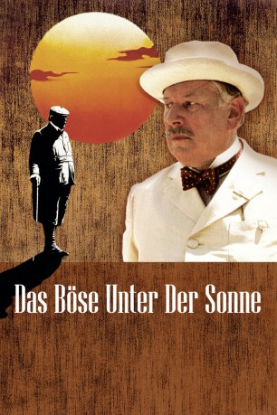

#2706 Das Böse unter der Sonne
Alternativ: Evil Under the Sun
 
 IMDB-Wertung: 7.0 / 10
IMDB-Wertung: 7.0 / 10  Metascore: 61
Metascore: 61 
Broadway-Diva Arlena Marshall liegt erdrosselt am griechischen Strand. Meisterdetektiv Poirot nimmt die Hotelgäste unter die Lupe. Und: Jeder hätte ein Motiv! Der eifersüchtige Gatte etwa, oder Produzent Odell, in dessen Show die Tote nicht auftreten wollte. Selbst die nette Hotelchefin ist nicht ohne…
Jahr: 1982
Dauer: 116 Minuten
FSK: 12
Land: England Studio: Kinowelt Home EntertainmentTonspuren:
Untertitel: Deutsch,
Auflösung: 1080p (1920x1040) Größe: 7833 MB
Genre: Thriller, Drama, Krimi, Mystery
Regisseur: Guy Hamilton
Drehbuch: Anthony Shaffer, Agatha Christie, Barry Sandler
Soundtrack:
Darsteller:
Datei: X:\Person\Agatha Christie\Böse unter der Sonne, Das (1982, FSK12, 1920x1040).mkv seit 03.12.2015
Festplatte: HD Collection-7+mehr(A-Z)+Person
 Es gibt insgesamt 12 Filme in der Gruppe 'Person\Agatha Christie'
Es gibt insgesamt 12 Filme in der Gruppe 'Person\Agatha Christie'